00:00那么，什么是机器学习呢？
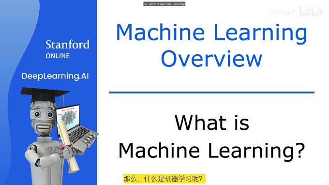
00:03在这个视频中，你将学习机器学习的定义，并了解在什么情况下你可能想要应用它。
00:15以下是 Arthur Samuel 提出的机器学习定义。
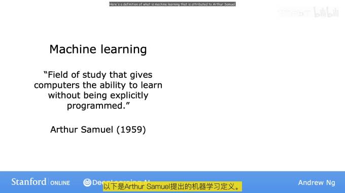
00:21他将机器学习定义为：赋予计算机无需明确编程即可学习的能力的研究领域。
00:28Samuel 的成名之处在于，早在二十世纪五十年代，他就编写了一个下棋程序。
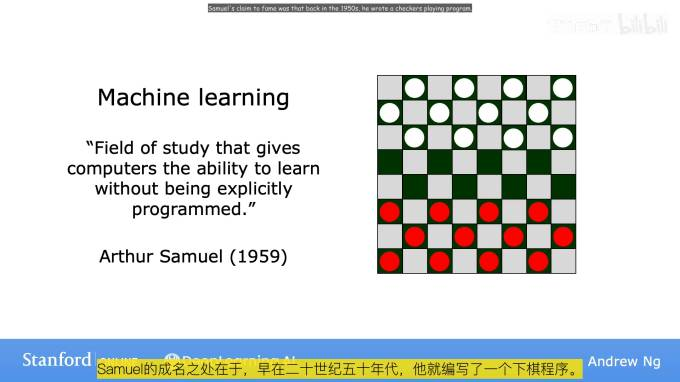
00:35这个程序的神奇之处在于，Arthur Samuel 本人并不是一个非常出色的棋手。
00:42他所做的是，让计算机与自己进行成千上万次的对弈。
00:49通过观察哪种棋盘位置往往导致胜利，哪种位置往往导致失败，这个下棋程序随着时间推移学会了什么是好位置、什么是坏位置。
01:01通过努力达到好位置并避开坏位置，他的程序在下棋方面变得越来越出色。
01:09因为计算机有耐心与自己进行成千上万次的对弈，它积累了如此多的下棋经验，以至于最终它成为了比本人更优秀的棋手。
01:23在接下来的这些视频中，除了讲解内容之外，我偶尔会问你一个问题，以帮助确保你理解了所学内容。
01:32这里有一个问题：如果计算机只进行了少得多的对弈次数，会发生什么？
01:39请看一下，并选择你认为更合适的答案。
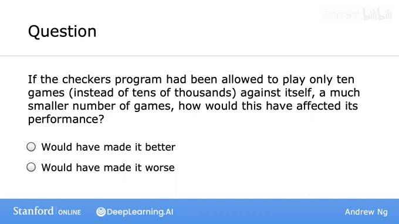
01:49如果你选择了这个答案，表示效果会更差，那么你就答对了。
01:57总的来说，你给学习算法提供的学习机会越多，它的表现就会越好。
02:03如果你第一次没有选对答案，那也完全没有关系。
02:07这些测验问题的目的并不是看你能否在第一次尝试时就全部答对。
02:14这些问题只是为了帮助你练习正在学习的概念。
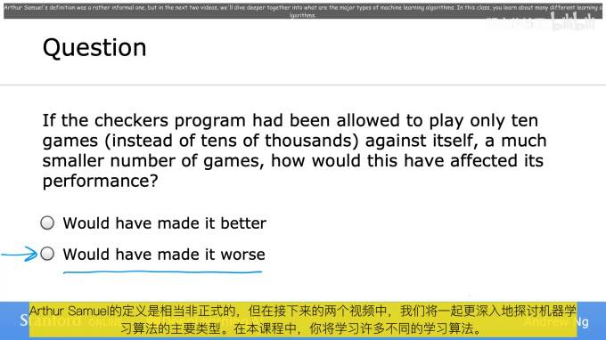
02:30Arthur Samuel 的定义是相当非正式的，但在接下来的两个视频中，我们将一起更深入地探讨机器学习算法的主要类型。在本课程中，你将学习许多不同的学习算法。
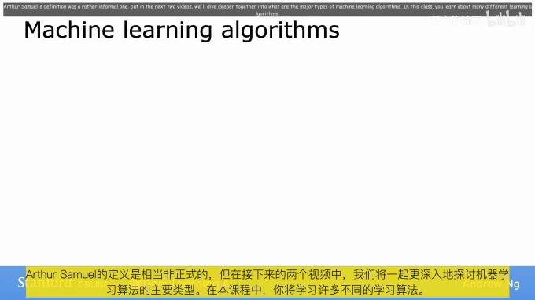
02:36机器学习的两种主要类型是监督学习和无监督学习。
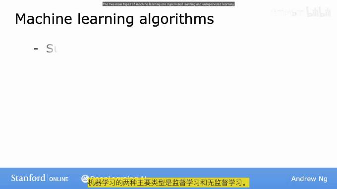
02:42我们将在接下来的几个视频中更详细地定义这些术语的含义。
02:47在这两者中，监督学习是许多实际应用中最常使用的机器学习类型，也是进步和创新最快的类型。
03:00在这个总共包含三部分课程的专项课程中，第一部分和第二部分将侧重于监督学习，第三部分将侧重于无监督学习。
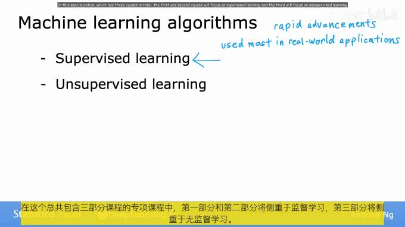
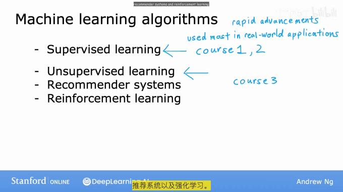
03:15目前，最常用的学习算法类型无疑是监督学习、无监督学习和推荐系统。在本专项课程中，我们还会花大量时间学习的另一件事，就是应用学习算法的实用建议。
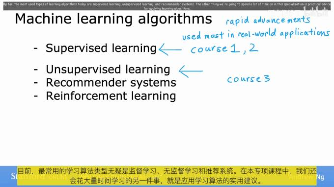
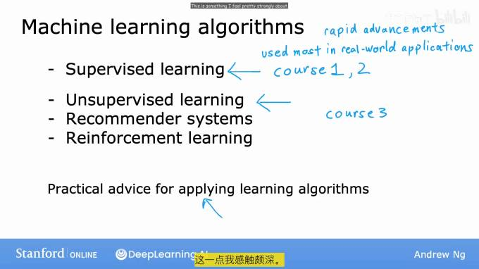
03:34教授学习算法就像是给人一套工具。
03:39与确保你拥有出色工具同等重要、甚至更为重要的是，确保你知道如何应用它们。
03:48因为，你知道，如果有人给你一把钝的旧锤子或一段楼梯扶手，然后说“祝你好运，现在你拥有了建造一栋三层房屋所需的所有工具”，那又有什么用呢？同样，在机器学习中，确保你拥有工具确实非常重要。
04:13而确保你知道如何有效地应用机器学习工具也同样重要。
04:19这就是你在这门课程中所获得的：工具，以及有效应用它们的技能。
04:27我经常拜访一些顶级科技公司的朋友和团队。
04:31即使在今天，我仍看到经验丰富的机器学习团队将机器学习算法应用于某些问题。有时他们研究了六个月却没有太大进展。
04:43当我看到他们的做法时，我有时会觉得，我本可以在六个月前就告诉他们当前的方法行不通。
04:51而且存在一种不同的使用这些工具的方法，能让他们有更大的成功机会。
04:57因此，在这门课程中，你将学到的一个相对独特的内容是，你会学到大量关于如何实际开发一个实用、有价值的机器学习系统的最佳实践。
05:08这样，你就不太可能成为那些最终因走错方向而浪费六个月时间的团队中的一员了。
05:17在这门课程中，你将了解最熟练的机器学习工程师是如何构建系统的。我希望你完成这门课程后，能成为当今世界上那些为数不多的、知道如何设计和构建严肃的机器学习系统的人之一。
05:35那么，机器学习就讲到这里。
05:38在下一个视频中，让我们更深入地探讨什么是监督学习，以及什么是无监督学习。
05:46此外，你将学习在什么情况下可能想要使用监督学习和无监督学习。